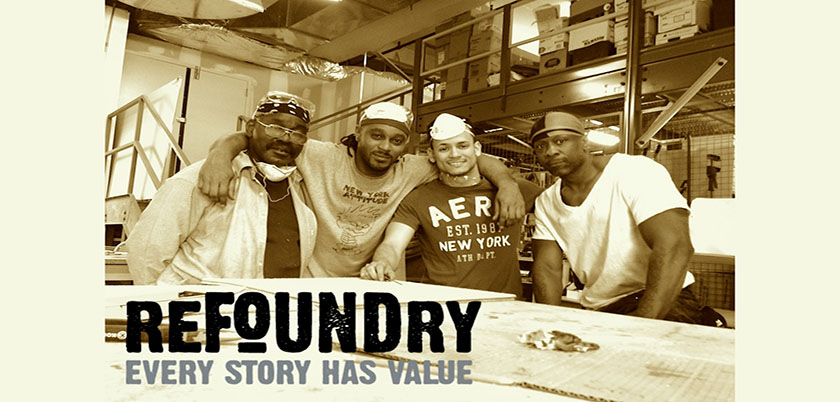

Culture by Collectives
The US total incarcerated population in 2014 was 214,149. It is now 2016 and we as a nation hold and incarcerated population of 191,606. That is a 5,149 increase in our society. How ever the the formely incarcerated public is forsaken to rehabilitate in a economic stature that often times repudiates progression. 67% of released prisoners are rearrested within in 36 months. With the right Re Enetry that could be a 5,149 difference being made enabling a positive economic impact.
REFOUNDRY. A new Program with a great cause.
This Non-Profit organization based out of Brooklyn,NY. is powering the people. Theyre mission is to assay and re-definine the people and materials onced casted away from society. Through consistency in self and community the program drives a birth in new purpose and innovative home furninshing.
"I was fifteen years old when I was first arrested, and over the next 32 years I never spent more than six months out of prison. Whenever I got out, I knew I was going right back in. But Refoundry changed all that. I joined the program 18 months ago, and in September I started my own business. Prison is finally in my past, and I feel there's nothing I can't achieve." --- James Eleby, 48, Refoundry participant
Refurbishing the sense of mind, wealth and community. A Movement like this helps increase business along with positively reenfocing economic circultaion. This fluctuation of society's contributors decay and cause is very misguided in my opinion. The want and need for a united front in porsperity is more than evident in this state of our country's numbers.
America was found upon the pillars of self-reliance, colabortation and entrepenuership. Unfortunately to that dismay the branding in "criminalization" is way too profitable in some eyes. Sought eyes see to strip away this very priveledge only in simple judgement.
There are two sides to every story. Crossroads in every Journey. As we step forward in hope to see the change in our nations stars shooting into our future. A nation with freedom to dream and a right to ones own America. That everyone and everything holds value. Help share and hold in value to these truth.
Artisan MoVado